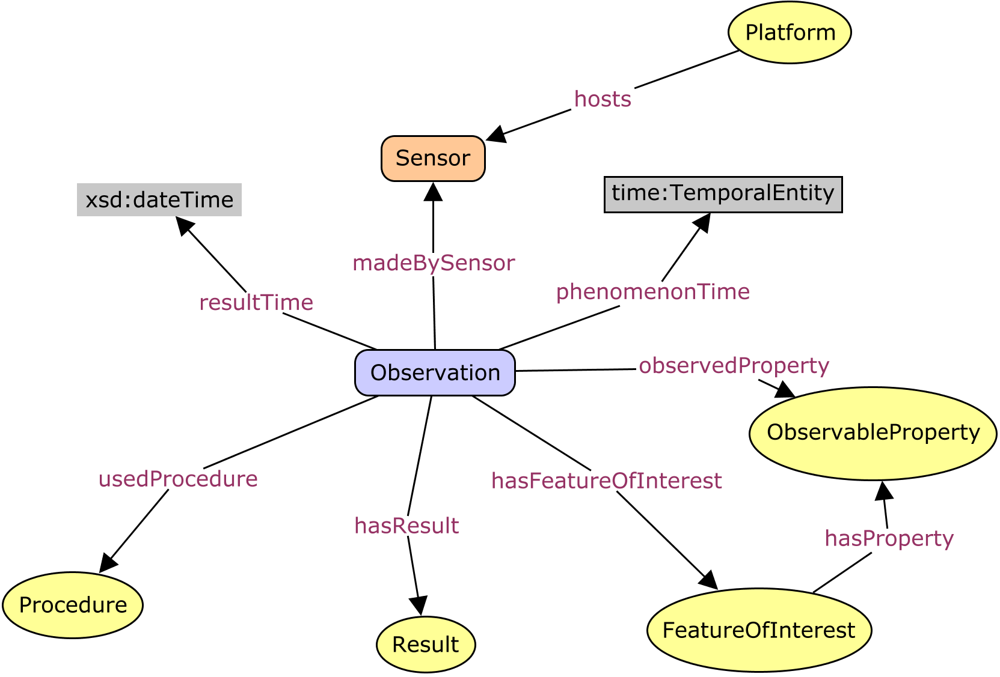
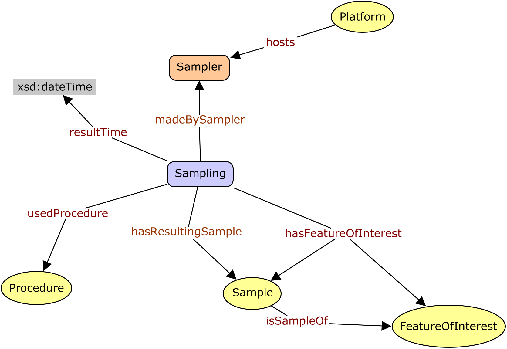
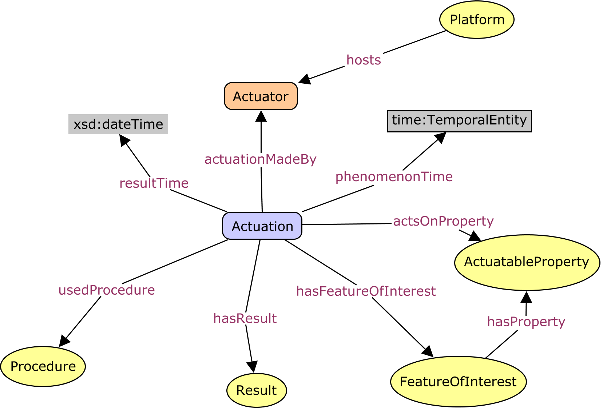
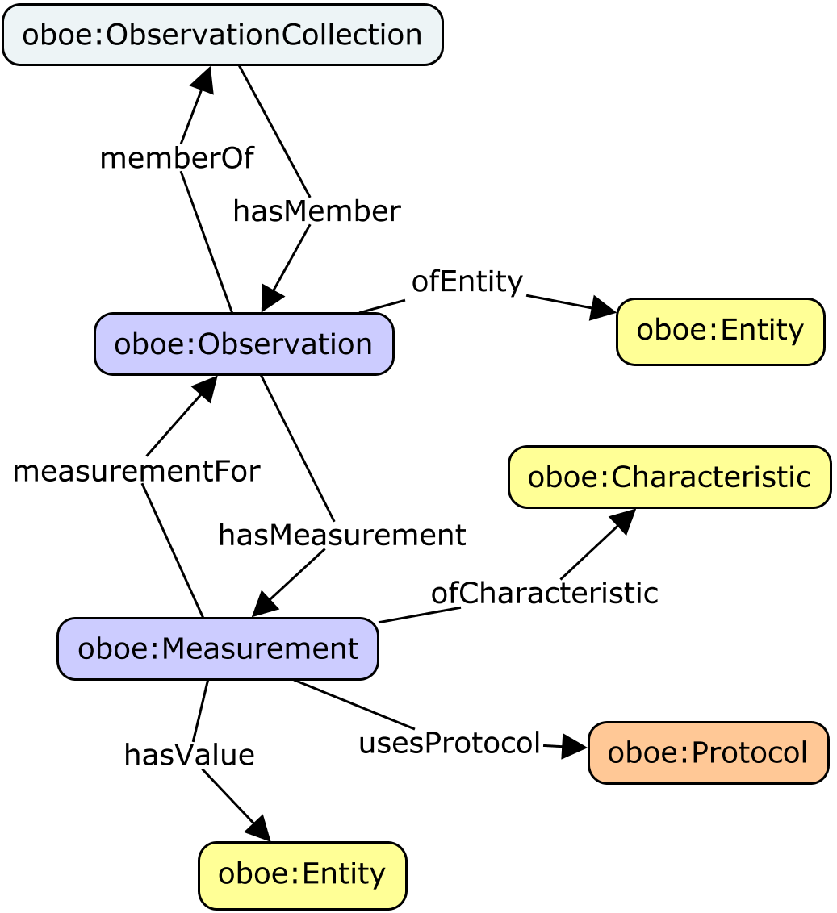
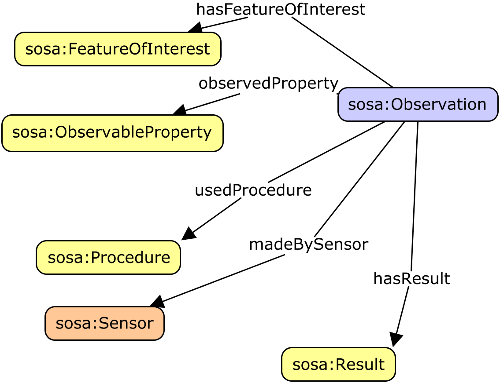

The Semantic Sensor Network Ontology (SSN) is an ontology for
describing sensors and their observations. SSN follows a modular
architecture by including a lightweight but self-contained core ontology
called SOSA for its elementary classes and properties. Given their
different scope and degree of axiomatization, SSN and SOSA support a
wide range of applications, including satellite imagery, large-scale
scientific monitoring, industrial and household infrastructures, social
sensing, citizen science, and the Web of Things. Both ontologies are
described below, and examples of their usage are given.
The namespace for SSN terms is http://www.w3.org/ns/ssn/.
The namespace for SOSA terms is
http://www.w3.org/ns/sosa/ .
The suggested prefix for the SSN namespace
is ssn.
The suggested prefix for the SOSA namespace is sosa.
For OGC This is a Public Draft of a document prepared
by the Spatial Data on the Web Working Group (SDWWG)
— a joint W3C-OGC project (see charter).
The document is prepared following W3C conventions. The document is
released at this time to solicit public comment.
Introduction
Sensor observations are a major source of data available on the Web
today. Nonetheless, publishing, searching, reusing, and integrating
these data requires more than just the observation results. Of equal
importance for the proper interpretation of these values is information
about the studied feature of interest, such as a river, the observed
property, such as flow velocity, the utilized sampling strategy, such as
the specific locations and times at which the velocity was measured, and
a variety of other information. OGC's Sensor Web Enablement standards
[[OandM]], [[SensorML]] provide a means to annotate sensors and their
observations. However, these standards are not yet integrated and
aligned with W3C Semantic Web technologies and Linked Data in
particular, which are key drivers for creating and maintaining a global
and densely interconnected graph of data. With the rise of the Web of
Things and smart cities and homes more generally, actuators and the data
they produce also become first-class citizens of the Web. Given their
close relation to sensors, observations, procedures, and features of
interest, it is desirable to provide a common ontology that also
includes actuators and actuation. Finally, with the increasing diversity
of data and data providers, definitions such as those for sensors need
to be broadened, e.g., to include social sensing. The following
specifications introduce the new Semantic Sensor Network (SSN) and
Sensor, Observation, Sample, and Actuator (SOSA) ontologies that are set
out to provide flexible but coherent perspectives for representing the
entities, relations, and activities involved in sensing, sampling, and
actuation.
Origins of SSN and SOSA
Here we briefly review the origins of SSN and SOSA, namely the initial
SSN version published by the W3C Semantic Sensor Network Incubator
Group [[SSNO]] and work on Sensor Web Enablement by the OGC. We
also highlight the most substantial changes made since the initial
release of the SSN.
Starting in 2002, OGC's Sensor Web Enablement initiative has developed
a generic framework for delivering sensor data, dealing with
remote-sensing, moving platforms, and in-situ monitoring and sensing.
The Sensor Observation Service defines a standard query interface for
sensor and observation data, following the pattern established by OGC
for their Web Services. The data returned is in XML, using Sensor Model
Language[[SensorML]] and [[OMXML]], the latter which implements
Observations and Measurements [[OandM]].
The Sensor Model Language (SensorML) [[SensorML]] and Observations and
Measurements (O&M) [[OandM]] are complementary viewpoints. SensorML
is 'provider-centric' and encodes details of the sensor along with raw
observation data. SensorML is self-contained and highly flexible. This
makes life easy for data producers but is demanding on consumers.
SensorML provides extensive support for serialization of numeric data arrays
and is particularly optimized for data that includes multiple parallel
streams that must be processed together. For example, the data collected
by cameras on airborne vehicles must be georeferenced based on the
instantaneous position of the platform and orientation of the camera. In
contrast, O&M was designed to be more 'user-centric' with the target
of the observation and the observed property as first-class objects.
O&M works at a higher semantic level than SensorML, but only
provides abstract classes for sensors, features of interest and
observable properties, expecting the details to be provided by specific
applications and domains. O&M also provided a model for sampling,
since almost all scientific observations are made on a subset of, or
proxy for, the ultimate feature-of-interest.
Drawing on considerable implementation and application experience with SSN and sensor and observation ontologies more broadly, the new SSN and SOSA ontologies presented here are set out to address changes in scope and audience, shortcomings of the initial work, as well as new technical developments. The list below highlights the most important (but by far not exclusive) updates.
Addressing changes in scope and audience
The initial SSN was developed with ontology engineers in mind as the primary audience. Due to the widespread adaptation of SSN, the increasing role of citizen science, the strong focus on lightweight vocabularies by the Linked Data community, and vocabularies such as Schema.org, the ontology was streamlined. SOSA is added as a core, and is also useful as a standalone ontology targeting Web developers, citizen science, lightweight Linked Data publishing, and so on. The new SSN introduces additional classes and relations on top of SOSA to model the capabilities of sensors and actuators, the compositionality of systems, and so forth to suit more complex needs or cases in which more provenance data is required, e.g., to improve reproducibility.
Allmost all scientific observations make heavy use of sampling strategies, and, therefore, the Sampling, Sampler, and Sample classes, as well as their corresponding properties, have been added to SOSA and SSN.
Due to the increasing importance of the Web of Things and smart instrumentation and environments more generally, the classes Actuator and Actuation have been added to SOSA and SSN.
Addressing shortcomings of the initial SSN
The new SSN streamlines the relations (and need for) the old Device, Platform, and Systems classes.
The old SSN was perceived as too heavyweight (on its axiomatization) and too dependent on OWL reasoning by some users. To strike a balance, DL expressivity of new lightweight SOSA ontology is ALI(D), while SSN remains in SRIQ.
The SSN previously imported the Dolce-UltraLite ontology (DUL) and many SSN terms inherited from DUL terms. Due to frequent user requests, this has been redesigned so that SSN (and SOSA) can be used entirely independently of DUL if desired. Some of the alignments with DUL have been reconsidered. Those parts of SSN that use DUL terms have been separated into the SSN Alignment with DUL ontology. This alignment and therefore the role of DUL in SSN have been declared non-normative.
The definitions for many classes and properties have changed slightly to improve explanation or to correct minor errors. Examples have been separated from the main definitions.
The initial SSN has been criticized for its partially inconsistent handling of virtual sensors (including software and simulations) and related classes and properties. The new SSN and SOSA address this issue by allowing all major classes to be virtual, and to better support humans and other animals as agents.
The notion of Procedure (formerly Plan) has been clarified to describe a workflow, protocol, plan, algorithm, or computational method specifying how to make an Observation, create a Sample, or make a change to the state of the world via an Actuator.
The Observation class in the initial SSN was conceptualized as a subclass of the DUL Situation class. To improve alignment with O&M and user expectations, as well as to follow a consistent modeling strategy for observations, sampling, and actuation, the Observation class defined in SOSA and the new SSN are now conceptualized as activities.
Addressing technical developments
The initial SSN used local/guarded domain and range restrictions. The lightweight SOSA ontology uses an even more restrained axiomatization to foster wide reuse and adaptation among an audience that is not necessarily familiar with OWL. SOSA makes use os the domainIncludes and rangeIncludes annotation properties defined in Schema.org. These had not been available before.
Given the increased interest in using Semantic Web technologies directly on the level of individual sensors, actuators, or platforms, SOSA's axiomatization does not use many of the more complex language elements introduced by the SSN.
Modularization
Practitioners using the original Semantic
Sensor Network Ontology as defined in the XG have identified a major
issue in its complexity, partly due to the layering underneath the
Dolce-UltraLite upper level ontology. In response to this, the new
Semantic Sensor Network ontology offers several ontology subsets that
are distinguished mainly through their ontological commitments. This
section explains the rationale and method for modularizing SSN, i.e.
offering several ontology files that are similar in their domain of
discourse, but with different ontological commitments, suitable to
several use cases.
Ontology modularization is a common method used in ontology engineering
to segment an ontology into smaller parts. In general, ontology
modularization aims at providing users of ontologies with the knowledge
they require, reducing the scope as much as possible to what is strictly
necessary in a given use case. Two main categories of ontology
modularization can be distinguished.
The first category comprises those approaches that focus on the
composition of existing ontologies by means of integrating and mapping
ontologies, most commonly through owl:import statements.
OWL import has a direction from a dependant ontology to a dependency
ontology. Although import is transitive, knowledge is propagated in only
one direction. The importing ontology captures all the meaning of the
imported terms used, by including all axioms relevant to the meaning of
these terms. However, the imported ontology does not capture any of the
semantics of the importing ontology.
The second category comprises of mapping approaches that aim to
partition and extract parts of ontologies as modules. These mapping
approaches are not necessarily directional, but most approaches of
ontology extraction rely on the directionality of the imported modules.
The main feature of an ontology module under the second category is that
it is self-contained, i.e., the module captures the meaning of the
imported terms used by including all axioms relevant to the meaning of
these terms. This means, that the result of certain reasoning tasks such
as subsumption or query answering within a single module should be
possible and result in the same answers without the need to access other
modules of the ontology.
Our modularization approach uses the first approach by composing the
ontology into several modules that use owl:import
statements, whereby we distinguish two methods depending on the
directionality of the segmentation, a vertical segmentation and a
horizontal segmentation
Fig.1:
The SOSA and SSN ontology and its vertical and horizontal modules.
Vertical Segmentation
Vertical modules build upon each other, i.e. they directionally owl:import
lower level modules. Lower level modules are independent of their higher
level modules and logically consistent on their own.
For example, the Dolce-UltraLite Alignment Module imports the SSN
Ontology which itself imports the SOSA Ontology. However,
in reverse, neither SOSA nor SSN import the Dolce-UltraLite
Alignment Module. In fact, SOSA as the core, does not
import any other ontologies, which makes it truly independent of
vertical modules that add more expressivity and further ontological
commitments to the lightweight semantics of SOSA.
Note that higher level here is not to be confused with upper level
ontologies. Upper level ontologies are general knowledge ontologies that
can be directionally imported in many domains, whereas our definition of
higher level ontologies here refers to an ontology that extends one or
several ontology modules to capture a larger part of a knowledge domain
and/or combine knowledge domains.
Horizontal Segmentation
Modules that are horizontally layered may depend on each other, i.e.
they may rely on the directional import of another horizontal module.
Only one horizontal module that is dependent on the SSN ontology is
presented in this specification, the Sample Relations Module.
Other ontologies that add domain-specific terms to SSN, but require the
import of SSN, can be considered horizontal modules.
Sensor, Observation, Sample, and Actuator (SOSA) ontology
Introduction
The Sensor, Observation, Sample, and Actuator (SOSA) ontology is one of
the modules provided by the Semantic Sensor Network ontology. It acts as
the core building block of SSN around which all other classes and
relationships evolve. SOSA is designed in a way that supports standalone
usage of the ontology, particularly for applications that merely require
light-weight specifications such as many Linked Datasets, the Internet
Of Things, citizen science, Schema.org-style semantic enrichment of data
repositories, and so forth. At the same time, it acts as minimal
interoperability fallback level between these applications and their
resulting data and those that make use of the full SSN, i.e., SOSA
defines those classes and properties for which data that can be safely
exchanged across all uses of the SSN.
Background
The initial W3C Semantic Sensor Network Incubator Group ontology
(SSN) was built around an ontology design pattern called the Stimulus
Sensor Observation (SSO) pattern [[SSO-Pattern]]. The SSO was
developed as a minimal and common ground for heavy-weight ontologies
for the use on the Semantic Sensor Web as well as to explicitly
address the need for light-weight semantics requested by the Linked
Data community. The SSO was also aligned to the Dolce-Ultralite upper
ontology (DUL).
The new SSN described in this document is based on a revised and
expanded version of this pattern, namely the Sensor, Observation,
Sample, and Actuator (SOSA) ontology. Similar to the original
SSO, SOSA acts as a central building block for the SSN but puts more
emphasis on light-weight use and the ability to be used standalone.
The axiomatization also changed to provide an experience more related
to Schema.org. Notable differences include the usage of the Schema.org
domainIncludes and rangeIncludes annotation
properties that provide an informal semantics compared to the
inferential semantics of their OWL-2 counterparts. In line with the
changes implemented for the new SSN, SOSA also drops the direct DUL
alignment although an optional alignment can be achieved via the
SSN-DUL alignment provided in Section 7. SOSA is also more explicit in
its support for virtual sensors and human sensors than SSO. Finally,
and most notably, SOSA extends SSO's original scope beyond sensors and
their observations by including classes and properties for actuators
and sampling. SOSA also distinguishes between phenomenonTime and
resultTime.
 Classes
and relationships involved in Observation
Classes and relationships involved in Sampling Classes
and relationships involved in Actuation
SOSA specification
This specification serves as the SOSA "namespace document".
The namespace for SOSA terms is http://www.w3.org/ns/sosa/
The suggested prefix for the SOSA
namespace is sosa
Actuation - An
Actuation carries out an (Actuation) Procedure to change the
state of the world using an Actuator.
skos:example
The activity of automatically closing a window if the
temperature in a room drops below 20 degree Celsius. The
activity is the Actuation and the device that closes the
window is the Actuator. The Procedure is the rule, plan,
or specification that defines the conditions that triggers
the Actuation, here a drop in temperature.
Feature Of Interest - The
thing whose property is being estimated or calculated in the
course of an Observation to arrive at a Result or whose property
is being manipulated by an Actuator.
skos:example
When measuring the height of a tree,
the height is the ObservedProperty, 20m may be the
Result of the Observation, and the tree is the
FeatureOfInterest. A window is a FeatureOfInterest for
an automatic window control Actuator.
Observable Property - An
observable quality of a FeatureOfInterest.
skos:example
The height of a tree, the depth of a
water body, or the temperature of a surface are examples
of observable properties, while the value of a classic
car is not (directly) observable but asserted.
Actuatable Property - An
actuatable property, i.e., characteristic, of a
FeatureOfInterest.
skos:example
A window actuator acts by changing the state between a
frame and a window. The ability of the window to be opened
and closed is its ActuatableProperty.
Observation - Activity
of carrying out an (Observation) Procedure to estimate or
calculate a value of a property of a FeatureOfInterest. Links to
a Platform or Sensor to describe what made the Observation and
how; links to an ObservableProperty to describe what the result
is an estimate of, and to a FeatureOfInterest to detail what
that property was associated with. The Result is the output of
the observation.
skos:example
The activity of estimating the intensity of an
Earthquake using the Mercalli intensity scale is an
Observation as is measuring the moment magnitude, i.e.,
the energy released by said earthquake.
Procedure - A
workflow, protocol, plan, algorithm, or computational method
specifying how to make an Observation, create a Sample, or make
a change to the state of the world (via an Actuator). A
Procedure is re-usable, and might be involved in many
observations, samplings, or actuations. It explains the steps to
be carried out to arrive at reproducible results.
skos:example
The measured wind speed differs depending on the height
of the sensor above the surface, e.g., due to friction.
Consequently, procedures for measuring wind speed define a
standard height for anemometers above ground, typically
10m for meteorological measures and 2m in Agrometeorology.
This definition of height, sensor placement, and so forth
are defined by the Procedure.
Result - The
Result of an Observation, Actuation, or act of Sampling. To
store an observation's simple result value one can use the
hasSimpleResult property.
skos:example
The value 20 as the height of a certain tree together
with the unit, e.g., Meter.
Sample - Feature
on which Observations may be made, which is intended to be
representative of a FeatureOfInterest that is not fully
accessible.
skos:example
A statistical sample is often designed to be
characteristic of an entire population, so that
observations can be made regarding the sample that provide
a good estimate of the properties of the population.
Sensor - Device,
agent (including humans), or software (simulation) involved in,
or implementing, a Procedure. Sensors respond to a stimulus,
e.g., a change in the environment, or input data composed from
the results of prior Observations, and generate a Result.
Sensors can be mounted on Platforms.
skos:example
Accelerometers, gyroscopes, barometers, magnetometers,
and so forth are sensors that are typically mounted on a
modern smart phone (which acts as Platform). Other
examples of sensors include the human eyes.
has feature of interest - A
relation between an Observation and the entity whose quality was
observed, or between an Actuation and the entity whose property
was modified, or between an act of Sampling and the entity that
was sampled.
skos:example
For example, in an Observation of the weight of a
person, the FeatureOfInterest is the person and the
quality is weight.
has result - Relation
linking an Observation and a Sensor or Actuator and a Result,
which contains a value representing the value associated with
the observed Property.
observed property - Relation
linking an Observation to the property that was observed. The
ObservableProperty should be a property of the FeatureOfInterest
(linked by featureOfInterest) of this Observation.
acts on property - Relation
between an Actuation and the property of a FeatureOfInterest it
is acting upon.
skos:example
In the activity (Actuation) of automatically closing a
window if the temperature in a room drops below 20 degrees
Celsius, the property on which the Actuator acts upon is
the state of the window as it changes from being open to
being closed.
is acted on by - Relation
between an ActuatableProperty of a FeatureOfInterest and an
Actuation changing its state.
skos:example
In the activity (Actuation) of automatically closing a
window if the temperature in a room drops below 20 degrees
Celsius, the property on which the Actuator acts upon is
the state of the window as it changes from being open to
being closed.
phenomenon time - The
time that the Result of an Observation/Actuation applies to the
FeatureOfInterest. Not necessarily the same as the result-time.
May be an interval or an instant, or some other compound
temporal entity.
used procedure - A
relation to link to a re-usable Procedure used in making an
Observation, an Actuation or taking a Sample typically through a
Sensor, Actuator or Sampler.
Accuracy - The
closeness of agreement between the result of an observation (resp.
the command of an actuation) and the true value of the observed
quality (resp. of the actuated quality).
Condition - Used
to specify ranges for qualities that act as conditions on a
Systems' operation.
skos:example
For example, wind speed of 10-60m/s is expressed as a
condition linking a quality, wind speed, a unit of
measurement, metres per second, and a set of values, 10-60,
and may be used as the Condition on a MeasurementProperty,
for example, to state that a Sensor has a particular
Accuracy in that condition.
Deployment - The
ongoing Procedure of entities (for the purposes of this ontology,
mainly Sensors or Actuators) deployed for a particular purpose.
skos:example
For example, a particular Sensor deployed on a Platform,
or a whole network of Sensors deployed for an Observation
campaign. The Deployment may have sub-Procedures, such as
installation, maintenance, addition, and de-comissioning and
removal Procedures.
detection limit - An
observed value for which the probability of falsely claiming the
absence of a component in a material is beta, given a probability
alpha of falsely claiming its presence.
Drift - As a
Sensor Property: a continuous or incremental change in the
reported values of Observations over time for an unchanging
Property under the defined Conditions. As an Actuator Property: a
continuous or incremental change in the true value of the acted on
ActuatableProperty over time for an unchanging Command under the
defined Conditions.
Feature of Interest - The
thing whose property is being estimated or calculated in the
course of an Observation to arrive at a Result or whose property
is being manipulated by an Actuator.
Latency - The
time between a command for an Observation (resp. Actuation) and
the Sensor providing a Result (resp. the Actuator operating the
Actuation), under the defined Conditions.
Measurement Range - The
set of values that the sensor can return as the result of an
observation under the defined conditions with the defined system
properties. If no conditions are specified or the conditions do
not specify a range for the observed qualities, the measurement
range is to be taken as the condition for the observed qualities.
Observation - An
Observation is a Situation in which a Sensing method has been used
to estimate or calculate a value of a Property of a
FeatureOfInterest. Links to Sensing and Sensor describe what made
the Observation and how; links to Property and Feature detail what
was sensed; the result is the output of a Sensor; other metadata
details times etc.
Operating Property - An
identifiable characteristic of the environmental and other
conditions in which the system is intended to operate. May include
power ranges, power sources, standard configurations, attachments
and the like.
Operating Range - The
environmental conditions and characteristics of a system's normal
operating environment. Can be used to specify for example the
standard environmental conditions in which the sensor is expected
to operate (a Condition with no OperatingProperty), or how the
environmental and other operating properties relate: i.e., that
the maintenance schedule or power requirements differ according to
the conditions.
Precision - The
closeness of agreement between replicate observations on an
unchanged or similar quality value: i.e., a measure of a sensor's
ability to consistently reproduce an observation.
Process - A
workflow, protocol, plan, algorithm, or computational method
specifying how to make an Observation, create a Sample, or make a
change to the state of the world (via an Actuator). A Procedure is
re-usable, and might be involved in many observations, samplings,
or actuations. It explains the steps to be carried out to arrive
at reproducible results.
Resolution - As a
sensor property: the smallest difference in the value of a quality
being observed that would result in perceptably different values
of observation results. As an actuator property: the smallest
difference in the value of an actuation command that would result
in a value change of the quality being observed.
Response time - As
a sensor property: the time between a (step) change in the value
of an observed quality and a sensor (possibly with specified
error) 'settling' on an observed value. As an actuator property:
the time between a (step) change in the command of an actuator and
a change in the actuated quality.
Result - The
Result of an Observation, Actuation, or act of Sampling. To store
an observation's simple result value one can use the
hasSimpleResult property.
System Capability - Describes
normal measurement, actuation, sampling properties such as
accuracy, range, precision, etc. of a System under some specified
Conditions such as a temperature range. The capabilities specified
here are those that affect the primary purpose of the System,
while those in OperatingRange represent the system's normal
operating environment, including conditions that don't affect the
observations or the actuations.
System Property - An
identifiable and observable characteristic that represents the
System's ability to operate its primary purpose: a Sensor to make
Observations, an Actuator to make Actuations, or a Sampler to make
Samplings.
Selectivity - As
a Sensor Property: Selectivity is a Property of a Sensor whereby
it provides observed values for one or more ObservableProperties
such that the Results for each ObservableProperty are independent
of other Properties in the FeatureOfInterest being investigated,
under the defined Conditions. As an Actuator Property: Selectivity
is a Property of an Actuator whereby it acts on one or more
ActuatableProperties such as the Results for each
ActuatableProperty are independent of other Properties in the
FeatureOfInterest being acted on, under the defined Conditions.
Sensitivity - As
a Sensor Property: Sensitivity is the quotient of the change in a
Result of Observation and the corresponding change in a value of
an ObservableProperty being observed, under the defined
Conditions. As an Actuator Property: Sensitivity is the quotient
of the change in a Command of Actuation and the corresponding
change in a value of an ActuatableProperty being acted on, under
the defined Conditions.
Sensor - Device,
agent (including humans), or software (simulation) involved in, or
implementing, a Procedure. Sensors respond to a stimulus, e.g., a
change in the environment, or input data composed from the results
of prior Observations, and generate a Result. Sensors can be
mounted on Platforms.
Stimulus - n
event in the real world that 'triggers' the Sensor. The properties
associated to the Stimulus may be different to the eventual
observed ObservableProperty. It is the event, not the object, that
triggers the Sensor.
Survival Property - An
identifiable characteristic that represents the extent of the
system's useful life under the specified Conditions. May describe
for example total battery life or number of recharges, or, for
Sensors that are used only a fixed number of times, the number of
observations that can be made before the sensing capability is
depleted.
Survival Range - Describes
SurvivalProperties of a System under some specified Conditions.
For example, to the lifetime of a System under a specified
temperature range. In the absence of SurvivalProperties, simply
describes the Conditions a System can be exposed to without
damage. For example, the temperature range a System can withstand
before being considered damaged. The System continues to operate
as defined using SystemCapability. If, however, the SurvivalRange
is violated, the System is 'damaged' and SystemCapability
specifications may no longer hold.
System - System
is a unit of abstraction for pieces of infrastructure that
implements Procedures. A System may have components, its
subsystems, which are other systems.
System Lifetime - Total
useful life of a System (expressed as total life since
manufacture, time in use, number of operations, etc.) in the
specified Conditions.
detects - A
relation from a Sensor to the Stimulus that the Sensor can detect.
The Stimulus itself will be serving as a proxy for some
ObservableProperty.
for property - A
relation between some aspect of an entity and a Property.
skos:example
For example, from a Sensor to the
properties it can observe; from an Actuator to the
properties it can act on; from a Deployment to the
properties it was installed to observe or act on; from a
SystemCapability to the Property the capability is
described for.
isProxyFor - A
relation from a Stimulus to the Property that the Stimulus is
serving as a proxy for.
skos:example
For example, the expansion of
quicksilver is a stimulus that serves as a proxy for some
temperature property. An increase or decrease in the
velocity of spinning cups on a wind sensor is serving as a
proxy for the wind speed.
observes - Relation
between a Sensor and a Property that the sensor can observe. Note
that, given the DUL modelling of Qualities, a sensor defined with
'observes only Windspeed' technically links the sensor to
particular instances of Windspeed, not to the concept itself - OWL
can't express concept-concept relations, only
individual-individual. The property composition ensures that if an
observation is made of a particular quality then one can infer
that the sensor observes that quality.
quality of observation - Relation
linking an Observation to the adjudged quality of the Result. This
is complimentary to the MeasurementCapability information recorded
for the Sensor that made the Observation.
This section introduces the alignment of SSN to DOLCE+DNS Ultralite upper ontology(DUL) which is the core dependency of previous version of SSN. This serves to
axiomatically clarify the intended meaning of SSN terms and will assist
SSN users wishing to interoperate with other DUL-aligned ontologies. It also
will be imported to the alignment module of previous SSN to the current one. Note that, it can be used independent to previous version
of SSN to align with more generic concepts/properties of DUL alone.
Similar to previous SSN ontology extending some more generic classes of DUL, following classes in
SOSA and SSN can be aligned via the subclass relation in following:
sosa:Procedure
subclass of
dul:Method
ssn:Sensor
subclass of
dul:Object
sosa:Observation
subclass of
dul:Event
ssn:Property
subclass of
dul:Quality
ssn:Stimulus
subclass of
dul:Event
ssn:System
subclass of
dul:Object
sosa:Platform
subclass of
dul:PhysicalObject
sosa:Platform
subclass of
dul:PhysicalObject
For the complicated alignments, the axiomatic alignments are used as folowing:
ssn:FeatureOfInterest
subclass of
owl:unionOf ( dul:Event dul:Object dul:Quality)
sosa:Result
subclass of
[ owl:unionOf ( dul:Region dul:Object ) ]
sosa:Deployment
subclass of
[ owl:unionOf ( dul:Situation dul:Process ) ]
Property alignments
Additional alignments from DUL properties to SOSA,SSN are as
follows.
ssn:hasProperty
sub-property of
dul:hasQuality
ssn:isPropertyOf
sub-property of
dul:isQualityOf
sosa:hosts
sub-property of
dul:isLocationOf
sosa:isHostedBy
sub-property of
dul:hasLocation
ssn:implementedBy
sub-property of
dul:describes
ssn:implements
sub-property of
dul:isDescribedBy
ssn:usedProcedure
sub-property of
dul:satisfies
sosa:madeObservation
sub-property of
dul:associatedWith
sosa:madeBySensor
sub-property of
dul:associatedWith
sosa:observedProperty
sub-property of
dul:associatedWith
sosa:hasResult
sub-property of
dul:associatedWith
sosa:phenomenonTime
sub-property of
dul:hasRegion
ssn:hasSubSystem
sub-property of
dul:hasPart
ssn:deployedOnPlatform
sub-property of
dul:associatedWith
ssn:deployedSystem
sub-property of
dul:associatedWith
ssn:hasDeployment
sub-property of
dul:associatedWith
ssn:inDeployment
sub-property of
dul:associatedWith
SSNX Alignment Module
This section formally relates the SSN to the previous version of SSN
that was published by the SSN-XG ("old SSN"). This may be useful for
backward-compatibility and transition purposes. While the namespaces for
SSN and DUL have changed since the SSN-XG first published the old SSN,
the SSN alignment, known as "SSN-SSNX" is available at http://www.w3.org/2017/01/ssn-ssnx/.
Note that, SSN-SSNX imports SSN-DUL.
Namespaces
The following namespace prefixes are used in the alignment to SOSA
and SSN
This section introduces the alignment of SOSA/SSN to OGC Observations
and Measurements [OandM] (also known as ISO 19156:2011).
The XML implementation of O&M [OM-XML] is used for the payload
for SOS services, of which there are many operational deployments.
Integration of these with observation data formalized using SOSA and
SSN is highly desirable, and would be expected to significantly enrich
the set of resources represented using SOSA/SSN. The alignment
presented here provides a basis for transforming OM-XML data into RDF
or OWL individuals according to the SOSA/SSN ontologies.
Identifying the UML elements
O&M is specified as a UML model, following the patterns
specified in ISO 19109 Geographic Information - Rules for
Application Schema [ISO-19109]. This means that the classes
represent concepts from the application domain, so can be
approximately equated with classes in an ontology.
An OWL implementation of O&M may be generated by explicit
translation of the UML following rules specified in [ISO-19150-2] -
see [OM-Heavy]. This translation generates an RDF entity denoted by
a URI for every class, class attribute, and association-role from
the original O&M UML model. The form of the URIs is also
specified in [ISO-19150-2], and appear explicitly in the official
OWL implementation of ISO 19156 (O&M) maintained by the ISO/TC
211 Group on Ontology Management. These URIs are therefore
convenient identifiers for elements of the O&M in a formal
alignment.
The explicit translation from the UML comes at a cost of a large
set of dependencies on similar OWL translations of other UML models
from ISO 19100 series standards. Furthermore, the ontology structure
reflects artefacts of the UML-style of modeling. This implementation
may introduce entailments that are inconsistent with SOSA/SSN
(though no inconsistencies have been identified yet) so it is
important to understand that use of these URIs here are principally
intended to denote the original UML classes and properties, rather
than this OWL implementation.
NOTE: In response to the complexity of the explicit translation, a
handcrafted version in more idiomatic OWL, without the dependencies,
is also available [OM-Lite].
NOTE: At time of writing, the ISO-specified URIs do not
de-reference, however, ISO/TC 211 are currently developing a
publication system to enable this and thus the use of these URIs as
Linked Data.
Namespaces
The following namespace prefixes are used in the alignment to SOSA.
Three utility classes are defined locally to support the
formalization of the alignment.
sosa-om:ActuationProcedure
Actuation procedures or recipes
sosa-om:ObservationProcedure
Observation procedures or recipes
sosa-om:SamplingProcedure
Sampling, sample preparation or processing procedures or
recipes
Class alignments
The primary classes from [OandM] have direct equivalents in SOSA
classes supplemented by the utility classes described above, as
follows:
iso19156-om:OM_Observation
equivalent class
sosa:Observation
iso19156-om:OM_Process
equivalent class
Union of ( sosa:Sensor or sosa-om:ObservationProcedure )
iso19156-sf:SF_SamplingFeature
equivalent class
sosa:Sample
iso19156-sf:SF_Process
equivalent class
Union of ( sosa:Sampler or sosa-om:SamplingProcedure )
Additional alignments from SOSA/SSN classes to O&M classes are
as follows.
iso19156_sp:PreparationStep
subclass of
sosa:Sampling
iso19156_sp:PreparationStep is a subclass since the act of Sampling
applies to all sample types, not only physical specimens.
sosa:FeatureOfInterest
subclass of
iso19156_gfi:GFI_DomainFeature
where iso19156_gfi:GFI_DomainFeature has the definition:
The class GFI_DomainFeature represents 'real-world' features
which are the ultimate subject of an observation campaign, i.e.
the features from an application domain that are not artefacts
of the observation process (sampling features).
sosa:FeatureOfInterest is a subclass of
iso19156_gfi:GFI_DomainFeature since not all domain features are
subjects of observation.
sosa:Actuator
subclass of
iso19156_gfi:GFI_Feature
sosa:Platform
subclass of
iso19156_gfi:GFI_Feature
where iso19156_gfi:GFI_Feature has the definition
The class GFI_Feature represents the set of all classes which
are feature types. In an implementation this abstract class
shall be substituted by a concrete class representing a feature
type from an application schema associated with a domain of
discourse (ISO 19109, ISO 19101).
Property alignments
The following properties from [OandM] have direct equivalents in
SOSA properties:
iso19156-om:OM_Observation.featureOfInterest
equivalent property
sosa:hasFeatureOfInterest
iso19156-om:OM_Observation.observedProperty
equivalent property
sosa:observedProperty
iso19156-om:OM_Observation.phenomenonTime
equivalent property
sosa:phenomenonTime
iso19156-sf:SF_SamplingFeature.sampledFeature
equivalent property
sosa:isSampleOf
iso19156-sp:SF_Specimen.processingDetails
equivalent property
sosa:isSamplingResultOf
Additional alignments from O&M properties to SOSA are as
follows.
iso19156-om:OM_Observation.procedure
sub-property of
sosa:usedProcedure
iso19156-sp:SF_Specimen.samplingMethod
sub-property of
sosa:usedProcedure
iso19156-om:OM_Observation.result
sub-property of
sosa:hasResult
iso19156-om:OM_Observation.resultTime
sub-property of
sosa:resultTime
iso19156-sp:SF_Specimen.samplingTime
sub-property of
sosa:resultTime
iso19156-sp:PreparationStep.time
sub-property of
sosa:resultTime
These are modeled as sub-properties because sosa:usedProcedure,
sosa:hasResult and sosa:resultTime applies to actuation, observation
or sampling activities.
This is modeled as a sub-property because the domain of
iso19156-sfs:SF_SpatialSamplingFeature.hostedProcedure is a spatial
sampling feature, such as a station, rather than a more general
platform.
This section introduces the alignment of SOSA to OBOE.
OBOE: The Extensible Observation Ontology, is used within the
biodiversity community for semantic representation of observation
data. The ontology is composed of multiple modules. The core
observation elements are in the module OBOE-core.
Namespaces
The following namespace prefixes are used in the alignment to SOSA.
An oboe:Observation is composed of a collection of
oboe:Measurements with the same feature-of-interest. Each
oboe:Measurement concerns a distinct observed-property
("characteristic") and uses a distinct procedure ("protocol"). We
therefore choose to align sosa:Observation with oboe:Measurement.


Core classes from the OBOE alongside the SOSA
observation model
The primary classes from [OBOE] are aligned with SOSA classes as
follows:
oboe:Measurement
subclass of
sosa:Observation
oboe:Characteristic
equivalent class
sosa:ObservableProperty
oboe:Protocol
equivalent class
sosa:Procedure
The class oboe:Entity appears in OBOE as the range of the
oboe:ofEntity and oboe:hasValue properties, so we interpret it as a
general superclass.
sosa:FeatureOfInterest
subclass of
oboe:Entity
sosa:Result
subclass of
oboe:Entity
Property alignments
The following properties from [OBOE] may be direct aligned with
SOSA properties:
oboe:ofCharacteristic
equivalent property
sosa:observedProperty
oboe:hasValue
equivalent property
sosa:hasResult
oboe:usesProtocol
equivalent property
sosa:usedProcedure
oboe:usesMethod
equivalent property
sosa:usedProcedure
oboe:hasValue, oboe:usesProtocol and oboe:usesMethod are
sub-properties of the corresponding SOSA properties which apply to
actuation and sampling as well as observation.
The feature-of-interest is linked to the oboe:Observation that
contains a oboe:Measurement, rather than to the oboe:Measurement
directly, so a property-chain axiom is required to express the
alignment.
sosa:hasFeatureOfInterest
property-chain axiom
[oboe:measurementFor, oboe:ofEntity]
The properties oboe:hasMeasurement and its inverse
oboe:measurementFor link an oboe:Observation to its member
oboe:Measurements. These could be modeled as sub-properties related
to rdfs:member and its inverse as follows:
This section introduces the alignment of SOSA to W3C PROV.
The underlying structure of PROV is based around a process-flow model, with three base classes: Entity - which is the class of physical, digital, conceptual, or other kinds of things with some fixed aspects, Activity - which is the class of things that occur over a period of time and act upon or with entities; it may include consuming, processing, transforming, modifying, relocating, using, or generating entities, and Agent - the class of things that bear some form of responsibility for an activity taking place, for the existence of an entity, or for another agent's activity.
Core PROV classes and some of the properties that relate them, shown alongside the core SOSA structure for observation, actuation and sampling
The SOSA/SSN ontologies conceive observations, actuations, and acts of sampling as activities or events, that result in information being produced, or a change in the world, or the production or transformation of a sample.
Thus, an alignment of SOSA to PROV is natural.
Compton et al. [[SSN-PROV]] and Cox [[OM-Lite]] have previously described alignments of the SSN-X and O&M models with PROV.
The alignment here is based on that work, also extended to consider actuation.
Namespaces
The following namespace prefixes are used in the alignment of SOSA to PROV.
Samples are often related to other samples, by sub-sampling,
topological relationships (stations along a traverse, pixels within an
image, probe spots on a polished section, specimens retrieved withina
borehole) or as parts of sample processing chains (crushing,
splitting, dissecting, disolving). There are an essentially unlimited
set of relationships between samples, so the nature of the
relationship has its own class. This section describes a flexible
model to describe such relationships between samples. The model is
based on the QualifiedRelation
pattern.
The namespace for Sample relationships
terms is http://www.w3.org/ns/sosa/sampling/
The suggested prefix for the sample
relationships namespace is sampling
Are there additional properties needed
for ssn:observation to represent forecasts as observations.
One may represent forecasts as observations if the value of sosa:phenomenonTime
is later in time than the sosa:resultTime. Given the
definition of these terms, it means that: The time when the
Observation act was completed is before the time that the Result of
the observation applies to the FeatureOfInterest.
Other means to represent forecasts are reported, but
not in the scope of this specification. For example
[[Lefrancois-et-al-2017]] derives the SSN Sensing/Sensor/Observation
pattern and define Forecasting/Forecaster/Forecast
classes.
Describing a plan for some actuation or observation in
the future is not covered by this specification.
Acknowledgements
The Editors recognise the major contribution of the members of the
original W3C Semantic Sensor Networks Incubator Group. The editors also
gratefully acknowledge the contributions made to this document by all
members of the SSN subgroup of the Spatial Data on the Web working
group.
The Dolce-UltraLite ontology, that was imported in SSN, is no
longer imported and all axioms using terms from DUL have been
removed from SSN and collected in the DUL-SSN alignment module.
The namespace was changed to match the planned namespace for this
publication.
The modularization as presented here, including the core, is
entirely new.
Correction to include some SSN terms that were unintentionally
dropped from the FPWD. Correction to remove an asserted subclass of
owl:Thing that was introduced into FPWD (these were both by-products
of the Dolce removal).
Correction to some https namespace usage that crept into the FPWD.
Transition to the new namespace used by the DUL module.
Inclusion of the DUL alignment and the old SSN (of the SSN-XG)
alignment.
ssn:Sensor has been changed to be a subclass of dul:Object
instead of dul:Physical Object.
Various typography and spelling errors and consistency of
expression in annotation properties have been improved. These do not
induce any changes in the intended meaning of the terms.
Specgen 6 has been used to generate the ontology documentation.
The popular sketch of SSN structure has been removed.
Object properties ssn:isValueOf, ssn:produces and
ssn:featureInObservation, along with a propertychain subproperty of
produces and another propertychain subproperty of hasProperty, were
introduced unintentionally in the FPWD.
Added vann:preferredNamespacePrefix and vann:preferredNamespaceUri
statements
Added SOSA and SSN alignment
Added SSN/SOSA alignments with O&M
Consistently added Capitalization of all ontology terms in all
rdfs:comments
Addressed naming inconsistency with changes in name to
isObservedBy/observes, madeBySensor/madeObservation
Use skos:examples to describe examples of classes/properties
Removed history skos:historyNote
SOSA-specific changes:
Various typography and spelling errors and consistency of
expression in annotation properties have been improved
Added "sosa:hasResult meta:domainIncludes sosa:Actuation" and
"sosa:isResultOf meta:rangeIncludes sosa:Actuation"
Changed the defintion of FeatureofInterest to account for
actuators
Introduced sosa:actsOnProperty and its inverse property
sosa:isActedOnBy
Added madeBySensor property
Renamed invokes and invokedBy to madeActuation and
actuationMadeBy
Changed hostedBy to isHostedBy
Added Sampler (device) and Sampling (act) to SOSA
Added madeSampling and madeBySampler properties
Added hasResultingSample and its inverse property
isSamplingResultOf
Added hasSimpleResult and hasResult instead of hasValue
Added ObservableProperty and ActuatableProperty
Changed rdfs:comment and skos:definition of sosa:Platform
Refined sosa:Result
Changed sosa:madeByActuator to sosa:actuationMadeBy
Added schema:domainIncludes sosa:Sampling to
sosa:observedProperty
Added schema:rangeIncludes time:TemporalEntity and
schema:domainIncludes sosa:Sampling to sosa:phenomenonTime
SSN-specific changes:
Changed syntax and layout in the alignment to SSN of the
SSN-XG
Refine ssn:Property: ObservableProperty in sosa, Property in
ssn, old SSN Property equivalent with ssn:Property
Import sosa: "ssn: a owl:Ontology ; owl:imports sosa:."
Update prefix for featureOfInterest in ssn:Observation and
ssn:Property definition
Added skos:examples to several rdfs:comments
Changed sub class relation of Accuracy from
ssn:MeasurementProperty to ssn:SystemProperty
Changed sub class of ssn:Deployment from
DeploymentRelatedProcess to DeploymentRelatedProcedure
Changed DeploymentRelatedProcess Class to
DeploymentRelatedProcedure
Changed sub class of ssn:DetectionLimit from
ssn:MeasurementProperty to ssn:SystemProperty
Deprecated the ssn:Device class
Changed sub class of ssn:Drift from ssn:MeasurementProperty to
ssn:SystemProperty
Changed the rdfs:comment of ssn:Drift to include Actuators
Changed sub class of ssn:Frequency from
ssn:MeasurementProperty to ssn:SystemProperty
Changed sub class of ssn:Latency from ssn:MeasurementProperty
to ssn:SystemProperty
Changed the rdfs:comment of ssn:Latency to include Actuators
Changed the rdfs:comment of ssn:MaintenanceSchedule to
reference the System class only
Changed MeasurementCapability to SystemCapability and changed
its axiom from hasMeasurementProperty to hasSystemProperty
Changed MeasurementProperty to SystemProperty
Changed sub class of ssn:MeasurementRange from
ssn:MeasurementProperty to ssn:SystemProperty and changed its
rdfs:comment
Changed the Observation’s classes qualified property
restriction from ssn:featureOfInterest to
sosa:hasFeatureOfInterest and ssn:FeatureOfInterest to
sosa:FeatureOfInterest
Changed the Observation’s class universal property
restrictions from ssn:observationResult to sosa:hasResult and
ssn:SensorOutput to sosa:Result
Changed the Observation’s class universal property restriction
from ssn:observedProperty to sosa:observedProperty and
ssn:ObservedProperty to sosa:ObservableProperty
Changed the Observation’s class qualified property restriction
from ssn:observedProperty to sosa:observedProperty and
ssn:ObservedProperty to sosa:ObservableProperty
Changed the Observation’s class qualified property
restrictions from ssn:observedBy to sosa:madeBySensor and
ssn:Sensor to sosa:Sensor
Changed the Observation’s class universal property
restrictions from ssn:sensingMethodUsed to sosa:usedProcedure
and sosa:usedProcedure
Changed the Observation’s class qualified property
restrictions from ssn:sensingMethodUsed to sosa:usedProcedure
and sosa:usedProcedure
Changed the minimum cardinality restriction on the Observation
class from ssn:observationSamplingTime to sosa:resultTime
Removed ssn:ObservationValue Class
Changed rdfs:comment of ssn:OperatingPowerRange
Changed rdfs:comment of ssn:OperatingProperty
Changed rdfs:comment of ssn:OperatingRange
Changed rdfs:comment of ssn:Output
Changed the Platform’s class universal property restrictions
from ssn:attachedSystem
Changed sub class of ssn:Precision from
ssn:MeasurementProperty to ssn:SystemProperty
Changed ssn:Process to sosa:Procedure
Changed rdfs:comment for ssn:Property
Changed the Property’s class existential property restrictions
class range from ssn:FeatureOfInterest to sosa:FeatureOfInterest
Changed rdfs:comment for ssn:Resolution
Changed sub class of ssn:Resolution from
ssn:MeasurementProperty to ssn:SystemProperty
Changed rdfs:comment for ssn:ResponseTime
Changed sub class of ssn:ResponseTime from
ssn:MeasurementProperty to ssn:SystemProperty
Changed rdfs:comment for ssn:Selectivity
Changed sub class of ssn:Selectivitye from
ssn:MeasurementProperty to ssn:SystemProperty
Removed ssn:Sensing Class
Removed ssn:SensingDevice Class
Changed the Sensor classes existential property restrictions
from ssn:hasMeasurementCapability to ssn:SystemCapability and
ssn:MeasurementCapability to ssn:SystemCapability
Changed the Sensor classes universal property restriction on
ssn:observes to sosa:observes
Changed the Sensor classes existential property restrictions
range class from ssn:Sensing to sosa:Procedure
Removed ssn:SensorDataSheet Class
Removed ssn:SensorInput Class
Removed ssn:SensorOutput Class
Changed rdfs:comment for ssn:Stimulus
Changed rdfs:comment for ssn:SurvivalProperty
Changed rdfs:comment for ssn:SurvivalRange
Changed rdfs:comment for ssn:System
Changed the System’s class universal property restriction from
ssn:onPlatform to sosa:isHostedBy and ssn:Platform to
sosa:Platform
Added a universal property restriction to the System’s class
on the hasSystemCapability property with a class range of
SystemCapability
Changed rdfs:comment for ssn:SystemLifetime
Added Property Restrictions to SOSA:ActuatableProperty for
sosa:isActedOnBy
Added Property Restrictions to SOSA:Actuation for
sosa:actuationMadeBy, sosa:hasFeatureOfInterest, sosa:hasResult,
sosa:resultTime, sosa:usedProcedure, sosa:hasFeatureOfInterest
and sosa:actuationMadeBy
Added ssn:ActuationRange Class
Added Property Restrictions to sosa:Actuator for
ssn:implements, ssn:forProperty and sosa:MadeActuation and
sosa:hasResult
Removed ssn:DeploymentRelatedProcess
Added Property Restrictions to ssn:Input for ssn:hasInput
Added Property Restriction to ssn:MeasurementRange
Added Property Restrictions to sosa:ObservableProperty for
isObservedBy, inverseOf sosa:observedProperty and inverseOf
ssn:isProxyFor
Added Property Restrictions to ssn:OperatingProperty
Added Property Restrictions to ssn:Precision
Added Property Restrictions to sosa:Result
Added Property Restrictions to sosa:Sample
Added Property Restrictions to sosa:Sampler
Added Property Restrictions to sosa:Sampling
Added Property Restrictions to ssn:SystemProperty
Added sub class of System relation to sosa:Sensor
Added Property Restrictions to ssn:Stimulus
Added Property Restrictions to ssn:SurvivalProperty
Added Property Restrictions to ssn:SurvivalRange
Added Property Restrictions to ssn:System
Removed attachedSystem property
Changed rdfs:comment for ssn:deployedOnPlatform
Removed ssn:deploymentProcessPart
Changed rdfs:comment for ssn:detects
Removed ssn:featureOfInterest property
Changed rdfs:comment for ssn:forProperty and added a
skos:example property
Changed rdfs:comment for ssn:hasDeployment
Renamed ssn:hasMeasurementCapability to
ssn:hasSystemCapability and changed its rdf:comment
Renamed ssn:hasMeasurementProperty to ssn:hasSystemProperty
and changed its rdf:comment
Changed rdfs:comment for ssn:hasOperatingProperty
Changed rdfs:comment for ssn:hasSurvivalProperty
Changed rdfs:comment for ssn:hasSurvivalRange
Changed rdfs:comment for ssn:implementedBy
Changed rdfs:comment for ssn:implements
Changed rdfs:comment for ssn:inCondition and added
skos:example property
Changed rdfs:comment for ssn:inDeployment and added
skos:example property
Removed ssn:isProducedBy property
Changed rdfs:comment for ssn:isPropertyOf
Changed rdfs:comment for ssn:isProxyFor and added skos:example
property
Removed ssn:madeObservation property
Removed ssn:observationResult property
Removed ssn:observationResultTime property
Removed ssn:observationSamplingTime property
Removed ssn:observedProperty property
Changed ssn:observes to sosa:observes, removed sub-property
chain for sosa:observes and defined it as sub-property of
ssn:forProperty